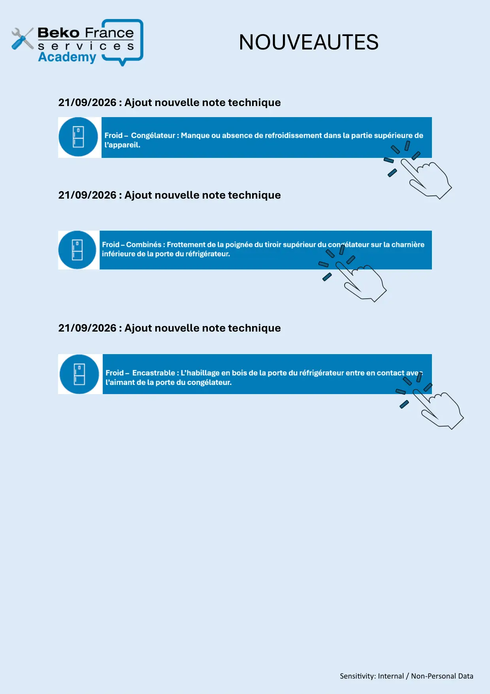

Nouveautés — dernières notes techniques

Sensitivity: Internal / Non-Personal Data21/09/2026 : Ajout nouvelle note technique21/09/2026 : Ajout nouvelle note technique21/09/2026 : Ajout nouvelle note techniqueNOUVEAUTES
1 / 1


Gros électroménager
Ressources techniques SAV — Beko · Grundig · Whirlpool · Hotpoint · Indesit.
